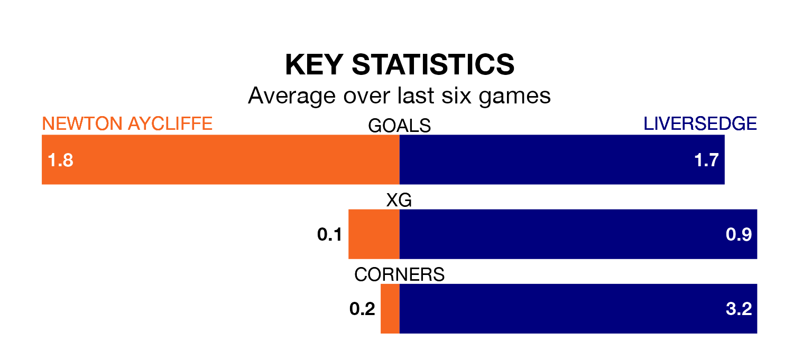

Newton Aycliffe host Liversedge on Saturday in the Northern Premier League Division One East.
In their last league match, on Tuesday, Newton Aycliffe beat Pontefract Collieries 2-0 away.
Liversedge lost, 2-1 at home against Consett.
With 33 goals in 21 games so far this season, Newton Aycliffe are scoring at the league's average rate with 1.6 goals per game. And they are conceding more than average, letting in 38 goals at a rate of 1.8 per game.
Liversedge are also average scorers, with 1.6 goals per game. They have conceded 1.4 goals per game.
The home team are in reasonable form in the Northern Premier League Division One East, with four wins and two losses from their last six games.
With a win and two draws over that period, the visitors' form is much worse – they have taken five points from 18, compared to Newton Aycliffe's 12.
Newton Aycliffe are eighth in the table after 21 games, of which they have won 10 and drawn one, earning 31 points.
Liversedge are five places behind the hosts in 13th, with eight wins and two draws putting them on 26 points.
Updated: 10:50, 10/01/24